Three Elements
Each student is asigned to three urban elements, which he or she will have to photograph during the semester.
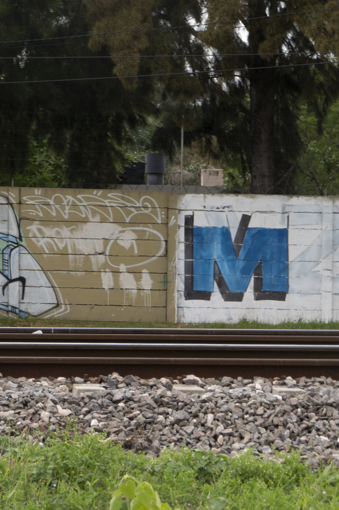
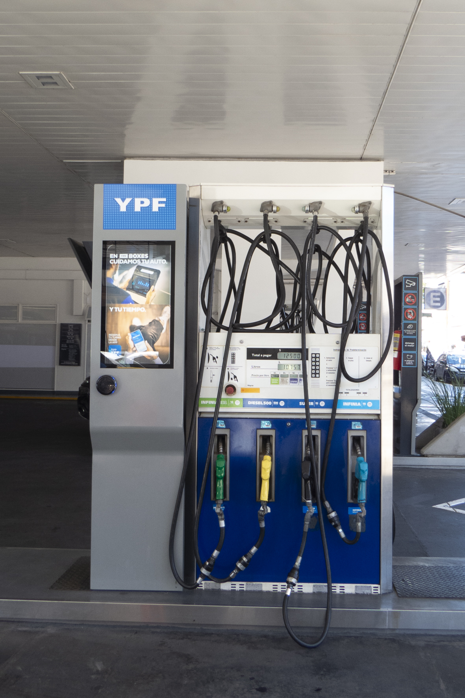
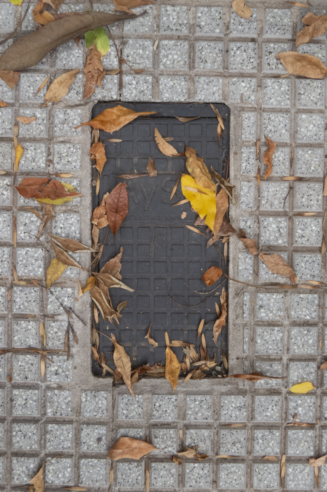
Sidewalks
Experience new ways to see common, everyday sidewalks. It's textures, it's cords, its cracks. Learn how to organize the photos according to it's type.
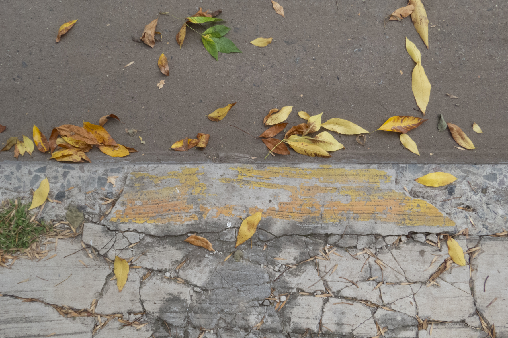
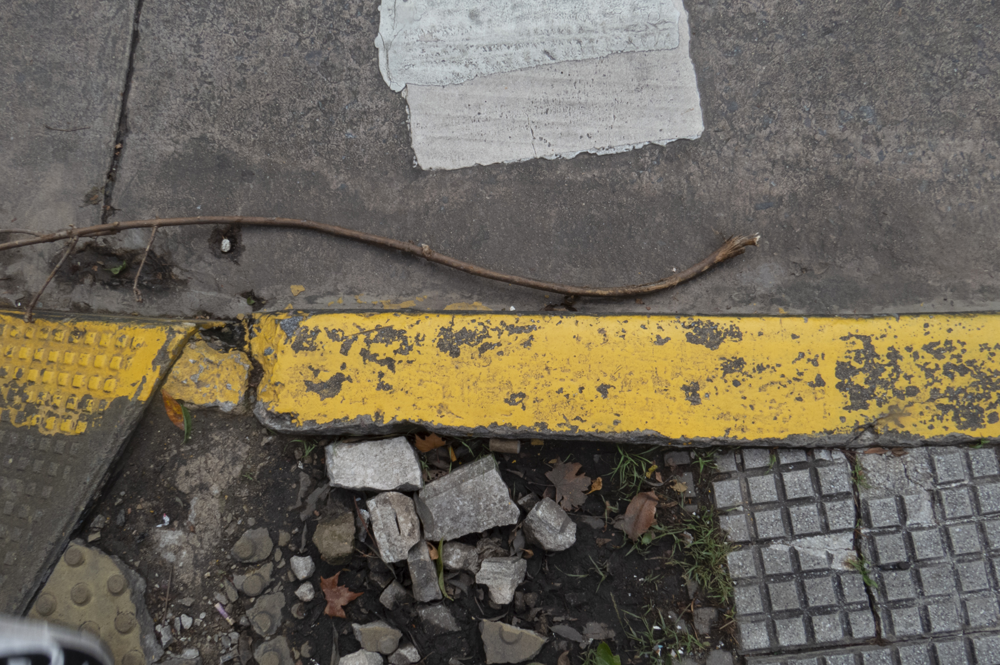
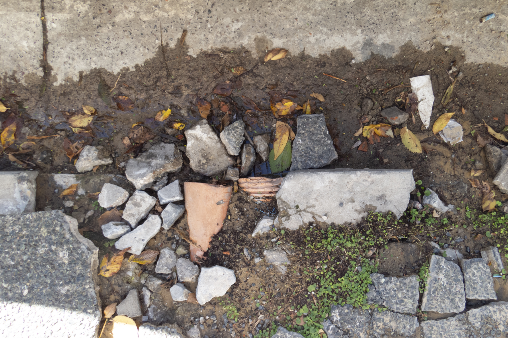
Boundaries
Find new limits in your surroundings. How do they stand? Are they permeable? How does the city divides the private and public places?
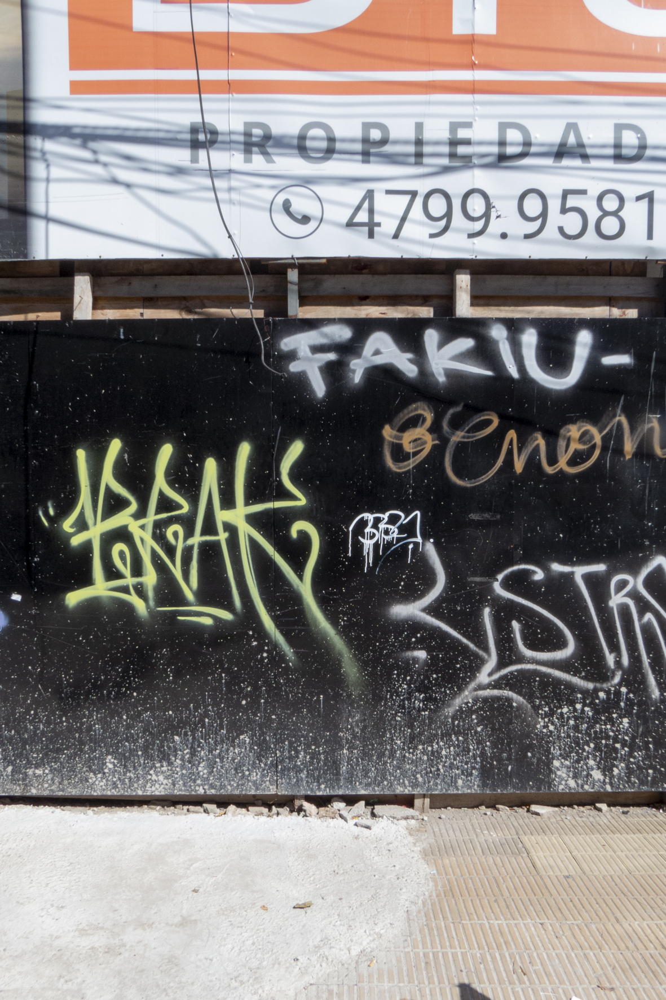
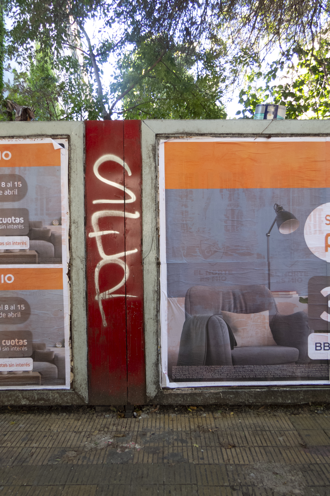
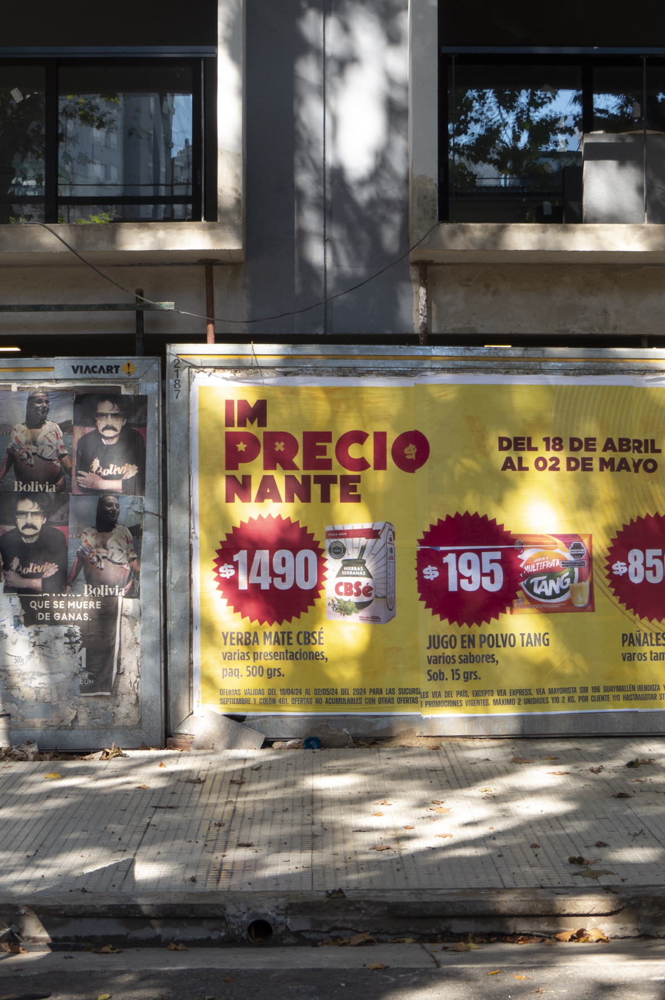
Typologies
What are those tyoplogies that define our city? Organize the series of different elements that are found where you live. The spots where you may buy today's journal, the grocery where you get your fruits, the colors that define the shops around you. How are they different to the ones in the next neighborhood?
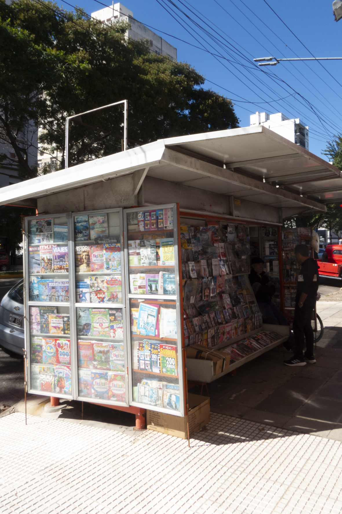
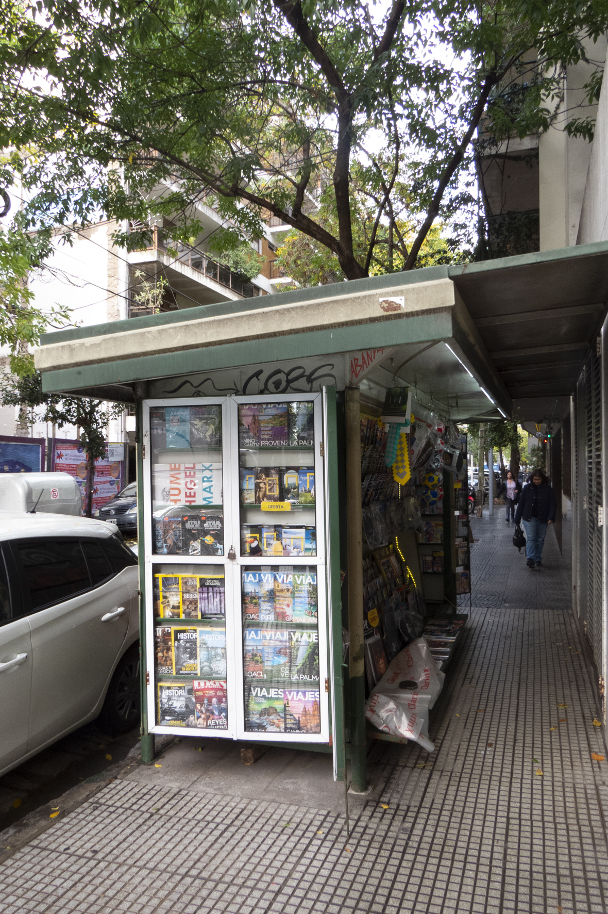
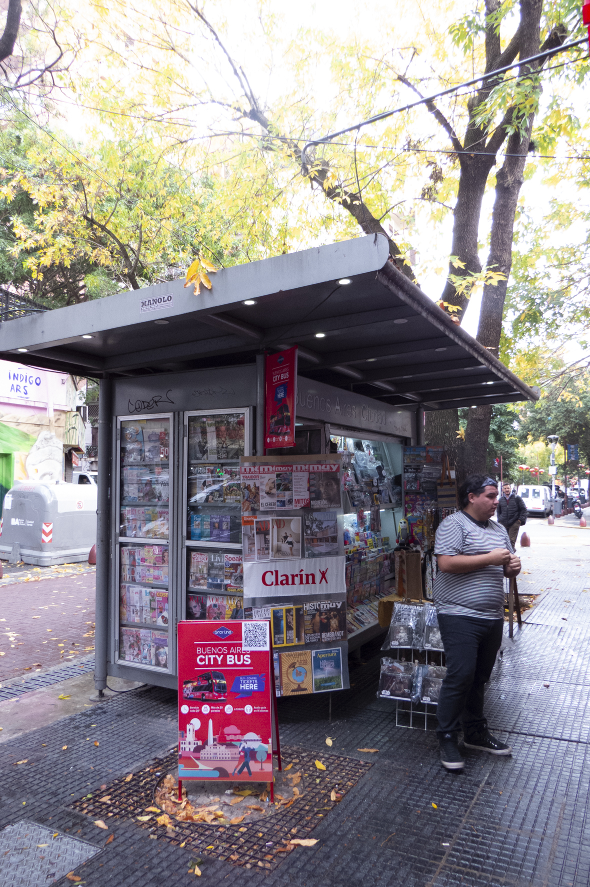